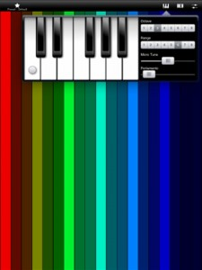

Steph O’Hara has crafted the highly original and fun to play synthmate for iPad. The unique coloured bars make it less about playing it like a traditional keyboard and more about freely experimenting with sounds and noises. The bars are intentially long as the Y axis can be assigned a control over the various settings. There are around a dozen presets that demonstrate the ‘synth’s’ capabilities, but after only an hour of playing with this, I’d already stored twice as many of my own great sounding presets in addition to those. I’m looking forward to spending a few more hours to see what this app is capable of. Read on for the main features –
synthmate : a musical synthesizer with a simple and elegant interface, programable controls including scales, wave type, lfo and yaxis control with a low-latency audio engine.
Features :
• real-time control, low latency
• multi-touch interface, change anything while playing
• 5 note polyphony
• 1 oscilator unit per touch : control pitch, volume
• 1 lfo unit per touch : control speed, amount
• 1 delay unit : control time, feedback
• Y axis assignable control
• edit scales, range, portamento and micro-tune
• load/save all settings
Drop by the home of synthmate – http://www.synthmate.com
Grab synthmate now – 


{kind=link}
{kind=link}
{kind=link}